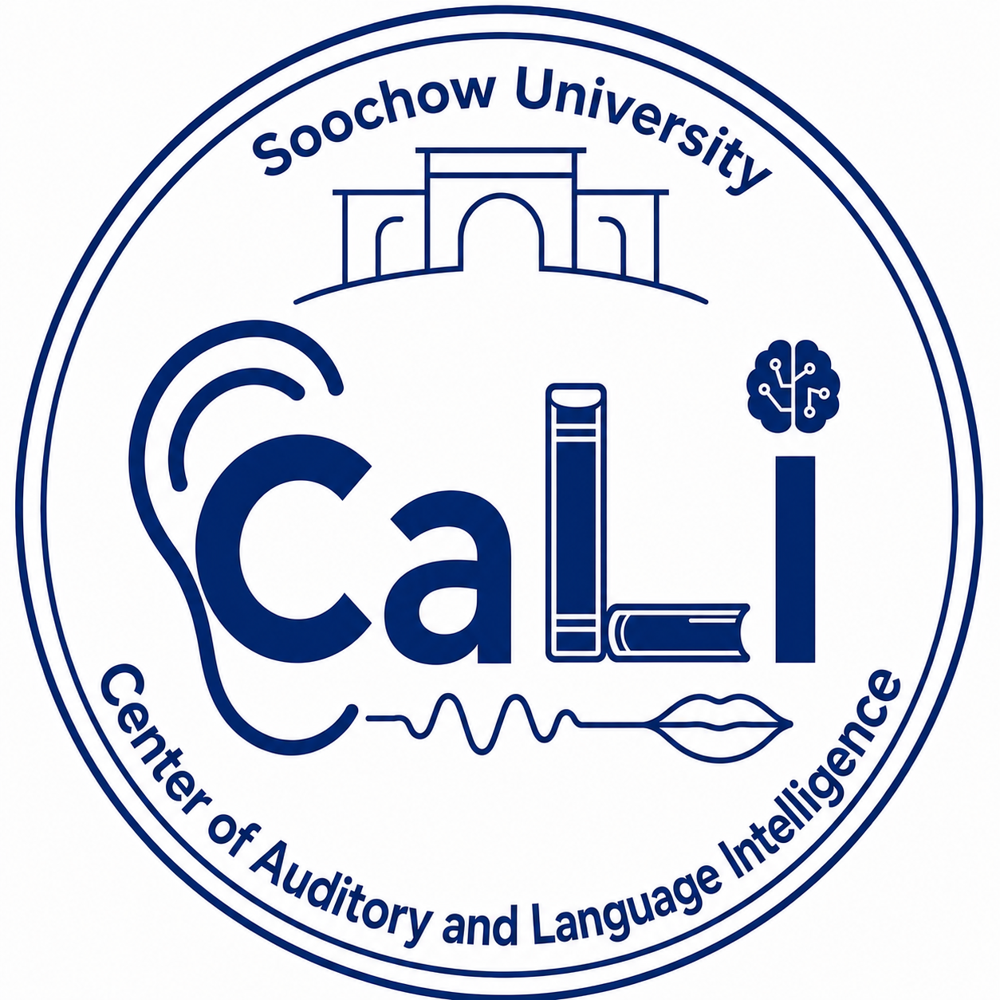

01
语言与多模态感知
让智能系统在复杂真实环境中协同感知语音、视觉、声音与上下文信息。
- 语言感知
- 多模态融合
- 具身感知

CaLi 听觉及语言智能研究中心苏州大学听觉及语言智能研究中心
面向声音、听觉、语音、知识与认知的智能融合，聚焦具身听觉、分布式智能体、多模态感知与智能工程，建设创新科研与人才培养基地。
中国 · 苏州大学
向下探索听得更深，想得更远
听觉及语言智能研究中心隶属于苏州大学。作为江苏省语言计算及应用重点实验室的重要依托单位，中心是由江苏省及苏州大学共同支持建设的创新型人才培养基地。
中心汇聚顶尖师资团队，由 IEEE Fellow、前华为高级专家及江苏省产业教授等领衔指导，并与 C9 高校建立科研直连机制，实现产业前沿需求的无缝对接。
中心始终坚持以真实产业问题为创新源头，构建“产学研用”深度融合的创新共同体，聚焦具身听觉、分布式智能体等前沿核心技术，贯通关键技术突破到产业场景落地的全链条创新体系，致力于培养 AI 时代下的创新型人才。
四个彼此连接的前沿方向
让智能系统在复杂真实环境中协同感知语音、视觉、声音与上下文信息。
发现声学信号结构，研究增强、分离、空间分析与稳健机器听觉方法。
研究人类与机器智能中语言、感知信息和知识的表征、融合与推理机制。
推动前沿 AI 成为面向科学与产业场景的高效、可扩展、可部署系统。
研究团队
胡诗超 副教授，徐春阳 讲师
一条完整创新链
以产业真实挑战凝练科研问题，以科研突破形成可落地系统，并让每个环节都成为培养创新型 AI 人才的实践场。
01
02
03
合作单位
围绕语言计算、语音语言智能与产业应用开展协同创新。
↗